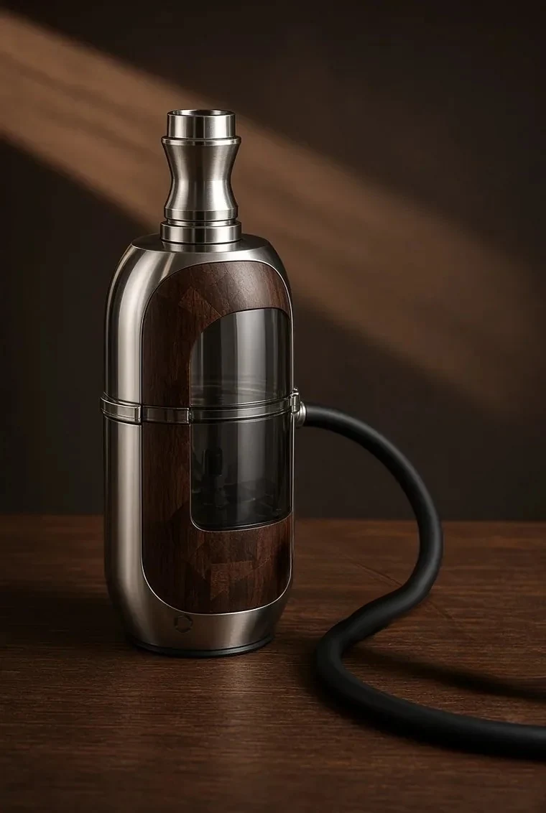
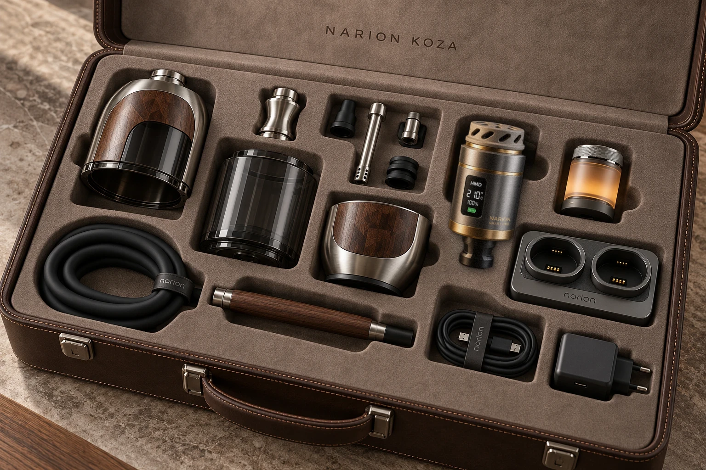

Hand-Blown Thick-Walled Crystal Glass Base • Proprietary 45° Bayonet Lock Standard • 17 Sculptural Hookah Models & the World's First 0.0 ppm Carbon Monoxide Cordless Smart Ceramic HMD Ecosystem.
17 MODELS
•
100% HANDCRAFTED CRYSTAL GLASS
•
45° BAYONET LOCK
•
0.0 PPM CO
NARION HOOKAH ARCHITECTUREWWW.NARIONHOOKAH.COM
NARIONPhilosophy & Radical Engineering
02
BRAND MANIFESTO
Where Tradition Meets Aerospace Engineering
NARION redefines centuries-old hookah heritage through modern materials science, micron-level 5-axis CNC tolerances, and clinical hygiene standards.
PILLAR 01
Handcrafted Thick-Walled Crystal Glass Base
Hand-blown heavy-wall optical crystal engineered for acoustic resonance, low center of gravity, zero odor retention, and effortless hygienic rinsing.
PILLAR 02
45° Bayonet Quick-Lock
Replaces worn rubber grommets and jamming threads with an aerospace-inspired 3-lug CNC stainless steel collar—hermetic sealing in one 45° quarter-turn.
PILLAR 03
Monoblock CNC Downstem
Machined from a single solid billet of AISI 304 stainless steel without welds or hidden threads—eliminating molasses buildup and corrosion.
PILLAR 04
40-Second Tool-Free Disassembly
Every component disassembles by hand for rapid sanitation—zero flavor ghosting carried over from previous sessions.
Every component is machined to micron tolerances on 5-axis CNC centers in our Istanbul facility, hand-polished, and pressure-tested.
NARIONTechnology Ecosystem
03
PATENT-PENDING • 0.0 PPM CARBON MONOXIDE
NARION Smart HMD: The Thermal Revolution Beyond Coal
The cordless smart ceramic heat head that eliminates the 1,200+ ppm toxic carbon monoxide, ash, sparks, and odor of burning charcoal.
Food-Grade Al₂O₃ MCH Ceramic Core
Closed-loop ±1°C PID precision heating (150°C–240°C) that vaporizes real shisha tobacco aromatics cleanly without scorching.
14.8V Cordless Hot-Swap Lithium Pack
90-minute uninterrupted cordless sessions per charge, with 5-second magnetic hot-swap cartridges for 24/7 lounge operation.
NARION Connect & Lounge OS Fleet Control
BLE 5.0 smartphone temperature control at the table, plus centralized multi-table bar monitoring for commercial venues.
0.0 ppm
Carbon Monoxide
Zero coal headache or CO exposure
90 min
Cordless Session
24/7 rotation via magnetic hot-swap
100W GaN
Fast Charging Dock
80% battery charge in 25 minutes
NARIONCollection Architecture
04
17 ORIGINAL DESIGNS • 4 ARCHITECTURAL SERIES
Four Architectural Lines of Series 01
Four distinct design families curated for luxury residences, executive lounges, yachts, and travel:
01. FLAGSHIP SERIES3 MODELS
Koza • Ladin • Manolya
The flagship pillars of NARION. Sculpted American walnut, herringbone solid oak, and aerospace aluminum cages crafted as centerpieces for signature spaces.
02. MODERN SERIES5 MODELS
Zeytin • Ardıç • Kemer • Yörünge • Çakıl
Organic silhouettes and contemporary industrial lines—compact footprints, fluid arches, and low-center-of-gravity ergonomics.
03. PRESTIGE & CLASSIC SERIES5 MODELS
Servi • Yalın • Aura • Monolit • İnci
Monumental 680 mm statures, monoblock aluminum sculptures milled over 6 hours, mother-of-pearl white PVD ceramic, and champagne brass.
04. TECHNOLOGY SERIES4 MODELS
Prizma • Ocak • Fener • Nomad
Faceted prismatic geometry, windproof marine-grade yacht cages, and ultra-compact travel hookahs with magnetic carry cases.
Every model shares the proprietary 45° Bayonet quick-lock and handcrafted thick-walled crystal glass base standard.Unified NARION Ecosystem
NARIONFlagship Series
05

FLAGSHIP • REF. NR-KZ-01
KOZA
Sculpted solid American walnut shell, spherical crystal glass base with panoramic water window, and iconic silhouette—our flagship masterpiece.
Height:
420 mm
Weight:
3,800 g (Low center of gravity)
Wood Body:
Solid American Walnut (Natural Oil Finish)
Base & Lock:
Handcrafted Crystal Glass & 45° AISI 304 Bayonet
Diffuser:
Adjustable Acoustic Silent Diffuser

Bespoke Magnetic Presentation Box Included
Rigid luxury presentation box, laser-cut velvet EVA cradle, and numbered certificate of authenticity.
NARIONFlagship Series
06
FLAGSHIP LINE • REF. NR-LD-02
LADİN
Nordic architectural restraint, herringbone solid oak panels, and whisper-quiet draw acoustics tailored for refined interiors.
Height:
580 mm
Weight:
4,100 g
Panel Material:
Herringbone Natural Solid Oak
Metalwork:
Brushed AISI 304 Stainless Steel
Crystal Base:
Handcrafted Thick-Walled Crystal Glass Base
Bespoke Magnetic Presentation Box Included
Herringbone-textured rigid box with protective pouch and complete seal kit.
CNC-milled aluminum charging dock powered by 100W GaN—replenishes four 14.8V packs simultaneously in 25 minutes.
NFC / RFID 13g Eco-Pod Ecosystem
Pre-portioned 13g recyclable aluminum tobacco pods—locks freshness, cuts leaf usage by 41%, and auto-sets PID temperature via NFC.
DIMENSIONS
48 x 36 x 18 cm
Cabin luggage compliant
WEIGHT
4.2 kg (Loaded Kit)
Ultra-light carbon shell
CERTIFICATION
IP67 & TSA Approved
Aviation travel approved
NARIONTechnical Specification Matrix
17
TECHNICAL MATRIX
Dimensions & Materials Matrix Across All 17 Models
Every model incorporates a food-grade AISI 304 stainless steel core, handcrafted thick-walled crystal glass base, and 45° Bayonet lock:
MODEL
SERIES
HEIGHT
WEIGHT
BODY MATERIAL
LOCK
SIGNATURE FEATURE
KOZA
Flagship
420 mm
3,800 g
Solid American Walnut
45° Bayonet
Panoramic Water Window
LADİN
Flagship
580 mm
4,100 g
Herringbone Solid Oak
45° Bayonet
Nordic Vertical Lines
MANOLYA
Flagship
620 mm
3,900 g
Aluminum & Champagne Brass
45° Bayonet
360° Open Crystal Cage
ZEYTİN
Modern
440 mm
3,400 g
Natural Solid Walnut Wings
45° Bayonet
Organic Fluid Wings
ARDIÇ
Modern
500 mm
3,600 g
Titanium PVD & Dark Wood
45° Bayonet
Linear Vertical Rhythm
KEMER
Modern
560 mm
3,750 g
CNC-Milled AISI 304 Steel
45° Bayonet
Monumental Arch Form
YÖRÜNGE
Modern
460 mm
3,500 g
Aerospace Aluminum Discs
45° Bayonet
Anti-Tip Low Gravity
ÇAKIL
Modern
380 mm
3,200 g
Satin-Finished Stainless
45° Bayonet
Smooth Pebble Contours
SERVİ
Prestige
680 mm
4,500 g
Tall Brushed Stainless
45° Bayonet
Tallest 680 mm Stature
YALIN
Classic
520 mm
3,700 g
AISI 304 Stainless Steel
45° Bayonet
Pure Metallic Minimalism
AURA
Prestige
600 mm
4,200 g
Prismatic Steel & Wood
45° Bayonet
Ambient Light Halo
MONOLİT
Prestige
550 mm
4,600 g
Solid Billet-Milled Aluminum
45° Bayonet
6-Hour Monoblock Sculpture
İNCİ
Prestige
480 mm
3,600 g
Pearl White PVD Ceramic
45° Bayonet
Champagne Brass Trim
PRİZMA
Tech
510 mm
3,500 g
Faceted Steel Construction
45° Bayonet
Vertical Purge Diffuser
OCAK
Tech
470 mm
3,900 g
Industrial Heavy Steel
45° Bayonet
Closed-Loop Hearth Design
FENER
Tech
530 mm
3,800 g
Marine-Grade Wind Cage
45° Bayonet
Superyacht & Terrace Ready
NOMAD
Tech
350 mm
2,100 g
Ultra-Compact Steel & Crystal
45° Bayonet
Dedicated Travel Case
NARION GLOBAL HQİSTANBUL, TR
NARION
SMART HOOKAH SYSTEMS • İSTANBUL
NARION hookahs are precision-machined on 5-axis CNC centers in our Istanbul workshop with our proprietary 45° bayonet lock and handcrafted thick-walled crystal glass bases. (Phase 2 R&D: Eastman Tritan™ shatterproof base option.)